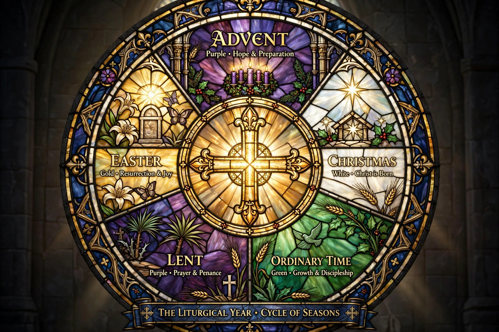

Also called the church year or Christian year; cycle of seasons in Christian liturgy.
The liturgical year, also called the church year, is the cycle of liturgical seasons in Christian churches that determines when feast days, including celebrations of saints, are observed, and which portions of Scripture are read.
In Roman Catholic, Anglican, Lutheran and many Protestant traditions the year begins with Advent (four weeks before Christmas), followed by Christmas, Ordinary Time, Lent, the Easter Triduum, the Easter season (ending at Pentecost), and a longer period of Ordinary Time. Liturgical colours — purple, white, green, red — mark the seasons.
Eastern Orthodox and Eastern Catholic churches begin the year on 1 September, with a cycle of fixed feasts and the movable Paschal cycle centred on Pascha (Easter), preceded by Great Lent.
Lectionaries assign readings across one-year (traditional) or three-year (modern Roman and Revised Common Lectionary) cycles, covering most of the Bible in public worship.